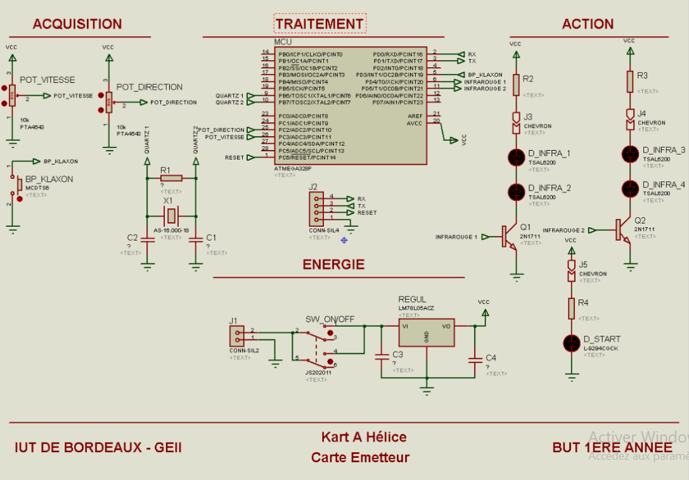
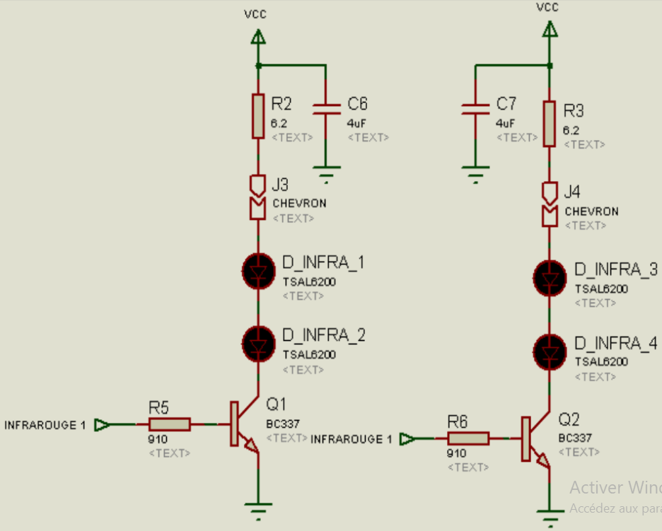
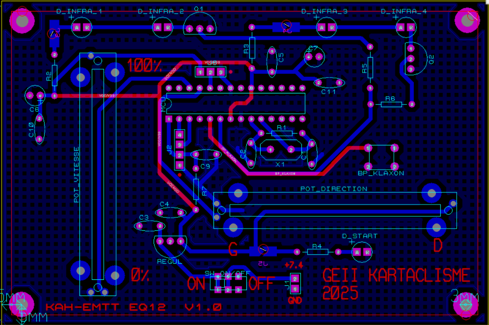
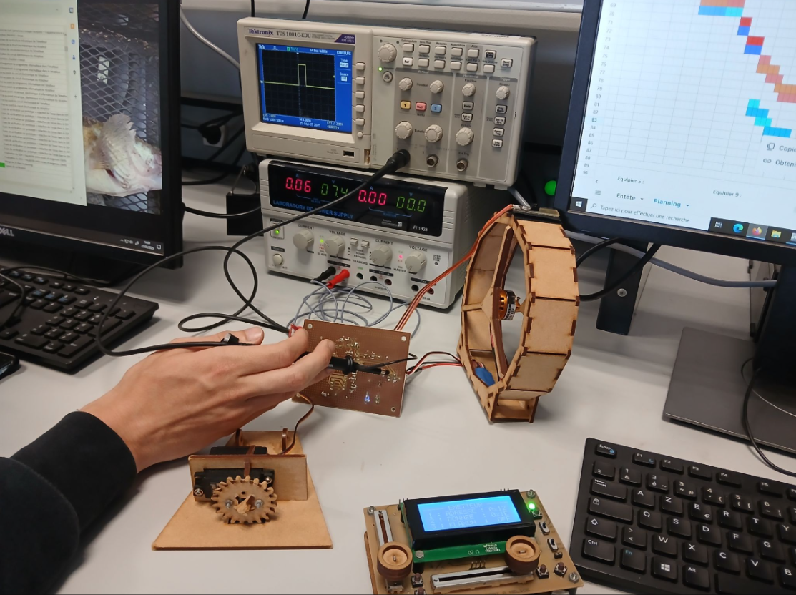
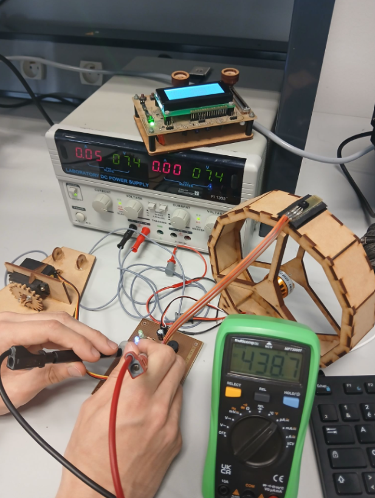

Présentation du Projet
Dans le cadre du BUT GEII, ce projet consistait à développer un kart miniature propulsé par une hélice. L'organisation s'est faite au sein d'un groupe de 8 étudiants, divisé en deux équipes : le sous-système récepteur installé sur le kart et le sous-système émetteur pour la télécommande. Chaque équipe était ensuite séparée par blocs fonctionnels. Avec mon binôme, nous avons géré le bloc acquisition et action de l'émetteur pour la partie conception, puis le bloc acquisition et action du récepteur pour la phase de vérification.
Développement du Projet


Phase de Conception (Émetteur)
Cette étape formalise l'étude et la saisie de schéma sur le logiciel ISIS (suite Proteus) pour répondre aux exigences de la télécommande.
EXIG_EMTT_PUISSANCE
L'émetteur devait envoyer les trames du protocole NEC via des LEDs infrarouges décodables par le récepteur à une distance minimale de 10 m. Pour assurer cette portée, un courant crête supérieur à 200 mA par LED est requis. L'intensité de sortie du microcontrôleur étant insuffisante, nous avons conçu un circuit d'amplification avec deux transistors bipolaires pour alimenter 4 lEDs infrarouges et atteindre un courant crête de 250 mA.
EXIG_EMTT_IHM & EXIG_EMTT_KLAXON
Nous avons mis en place une interface homme-machine (IHM) composée de deux potentiomètres pour contrôler respectivement la puissance du moteur et la direction du kart. Nous avons également intégré un bouton-poussoir permettant à l'opérateur d'activer l'avertisseur sonore (klaxon) du véhicule.

Phase de Fabrication (Émetteur)
En équipe, nous avons rédigé le Dossier de Fabrication (DDF) pour matérialiser la carte électronique de la télécommande.
J'ai participé au placement des composants et au routage des pistes de cuivre sur le logiciel ARES (suite Proteus) à partir du schéma électrique préalablement saisi sur ISIS. Après la fabrication du circuit imprimé, j'ai pris en charge le brasage des composants traversants en suivant la nomenclature du projet.


Phase de Vérification (Récepteur)
Pour garantir l'objectivité des tests, le protocole imposait une vérification croisée. Je me suis chargé de valider le bloc acquisition et action du sous-système récepteur installé sur le véhicule.
Validation de la Commande de Puissance
J'ai vérifié la conformité des signaux de commande générés pour le moteur brushless. À l'aide de l'oscilloscope, j'ai mesuré les temps à l'état haut du signal PWM pour m'assurer qu'ils respectaient la tolérance du cahier des charges entre les positions de puissance minimale et maximale.
Constat de non-conformité (EXIG_RCPT_CONNEXION)
Lors des essais du récepteur, j'ai déterminé par mesure indirecte l'intensité lumineuse de l'indicateur bleu de connexion et constaté une non-conformité. La LED affichait 125 mcd, dépassant la limite de 100 mcd +/-20% à cause d'une résistance série mal dimensionnée. J'ai isolé ce défaut sur le terrain et nous avons corrigé l'erreur en remplaçant le composant par une résistance d'une valeur plus grande pour valider l'exigence.
Bilan du Projet
Ce projet a validé ma capacité à travailler en équipe. J'ai appris à identifier une exigence issue du cahier des charges et à y associer une solution technique pertinente lors de l'étude de l'étage de puissance infrarouge de l'émetteur, tout en contribuant à la rédaction des dossiers techniques. La phase finale de vérification m'a permis d'isoler et de corriger une erreur de dimensionnement sur le terrain.
Sur le plan pratique, j'ai maîtrisé les outils de la suite Proteus (ISIS et ARES) pour la conception de schémas et le routage de circuits imprimés. J'ai consolidé mes compétences en brasage de composants traversants et en utilisation d'appareils de mesure de laboratoire (oscilloscope, multimètre) pour analyser les signaux de commande.